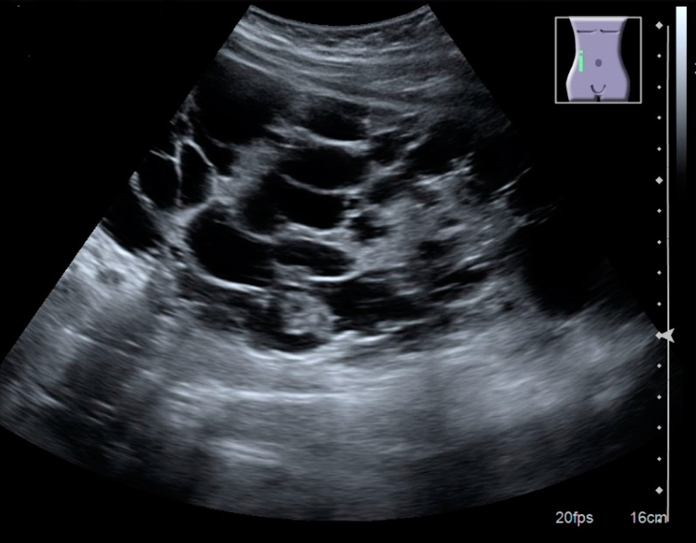

Ficha del catálogo
Poliquistosis renal autosómica dominante
- Sistema
- Urinario
- Modalidad
- US
- Región
- Riñones e hígado
- Dificultad
- Intermedio
Es una enfermedad hereditaria en la que se forman de manera progresiva múltiples quistes en ambos riñones, que crecen a lo largo de la vida y sustituyen el parénquima funcionante. Se manifiesta en la edad adulta con hipertensión, dolor lumbar, hematuria e insuficiencia renal progresiva. Presenta manifestaciones extrarrenales, sobre todo quistes hepáticos y mayor riesgo de aneurismas intracraneales.
Técnica
El ultrasonido es la técnica de primera línea para el diagnóstico y el cribado familiar por su disponibilidad y ausencia de radiación. La tomografía y la resonancia se emplean para medir el volumen renal total, valorar complicaciones y estudiar el hígado con mayor detalle. La angiorresonancia intracraneal se plantea en pacientes con antecedentes familiares de hemorragia o de aneurisma.
Qué observar
- Riñones aumentados de tamaño y de contorno lobulado por múltiples quistes
- Afectación bilateral con quistes de tamaños muy diferentes entre sí
- Sustitución progresiva del parénquima y pérdida de la diferenciación corticomedular
- Quistes con contenido ecogénico o niveles por hemorragia o infección
- Calcificaciones parietales y litiasis asociada en el sistema colector
- Quistes hepáticos acompañantes y, con menor frecuencia, pancreáticos
Hallazgos
Se observan riñones globalmente agrandados, ocupados por numerosos quistes anecoicos de tamaño heterogéneo que deforman el contorno y desplazan el seno renal. Con la progresión, el parénquima normal se reduce hasta hacerse difícil de identificar entre las paredes quísticas. Los quistes complicados por hemorragia muestran contenido ecogénico o tabiques, y en tomografía se reconocen por su atenuación espontánea elevada.
Perlas
La bilateralidad, el aumento del volumen renal y los quistes hepáticos asociados distinguen esta enfermedad de los quistes simples múltiples adquiridos, que aparecen en riñones de tamaño normal o pequeño. El diagnóstico ecográfico se apoya en el número de quistes según la edad del paciente y en la existencia de antecedentes familiares.
Diagnóstico diferencial
- Quistes renales simples múltiples
- Los riñones conservan tamaño y morfología normales, los quistes son pocos y no hay afectación hepática.
- Enfermedad quística adquirida de la diálisis
- Se da en riñones pequeños y atróficos de pacientes en diálisis prolongada, con riesgo de tumor renal asociado.
- Poliquistosis renal autosómica recesiva
- Se presenta en el neonato o el lactante con riñones muy ecogénicos y microquistes, junto a fibrosis hepática congénita.
- Carcinoma renal quístico
- Es una lesión dominante con tabiques gruesos, nódulos murales y realce interno tras contraste.
Simuladores
- Hidronefrosis marcada con cálices dilatados que simulan quistes
- Quistes parapiélicos múltiples que ocupan el seno renal
- Riñón multiquístico displásico unilateral en el paciente joven
Por modalidad
- TC
- Cuantifica el volumen renal, detecta quistes hemorrágicos por su atenuación alta y valora litiasis y complicaciones.
- RM
- Es la mejor técnica para medir el volumen renal total y para caracterizar el contenido de los quistes sin radiación.
- US
- Sirve para el diagnóstico inicial y el cribado familiar, y detecta hidronefrosis, litiasis y quistes hepáticos.
Protocolo
Ultrasonido abdominal con transductor convexo, midiendo la longitud de ambos riñones y describiendo el número aproximado y el tamaño de los quistes mayores, con exploración hepática completa. La tomografía o la resonancia con estudio en fases sin contraste y tras contraste se reservan para complicaciones o para cuantificar el volumen renal. Ante una lesión que no cumple criterios de quiste simple se aplica un estudio dirigido para caracterizarla.
Clasificación
Las lesiones quísticas individuales que resulten atípicas dentro de estos riñones se caracterizan con la clasificación de Bosniak, que ordena los quistes en categorías según tabiques, calcificaciones, engrosamiento parietal y realce, con riesgo creciente de malignidad. También se emplea el volumen renal total ajustado a la altura y la edad como marcador de progresión de la enfermedad.
Errores frecuentes
- Confundir quistes parapiélicos o hidronefrosis con enfermedad poliquística
- No explorar el hígado y perder los quistes hepáticos que apoyan el diagnóstico
- Pasar por alto una lesión sólida o con realce entre la multitud de quistes

poliquistosis renal quistes renales enfermedad hereditaria quistes hepáticos insuficiencia renal Bosniak urinario